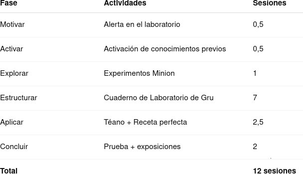

Justificación didáctica
Esta situación de aprendizaje se fundamenta en los siguientes principios pedagógicos:
- Aprendizaje significativo: los contenidos se contextualizan en situaciones reales cercanas al alumnado.
- Metodologías activas: ABP, gamificación, aprendizaje cooperativo e investigación guiada.
- Evaluación formativa: observación, coevaluación, autoevaluación y producto final.
- Gestión positiva del error: el error se concibe como oportunidad de aprendizaje.
- Inclusión y equidad: atención a la diversidad y aplicación del DUA.
🌍 Objetivos de Desarrollo Sostenible trabajados
- ODS 4 – Educación de calidad: aprendizaje competencial, inclusivo y significativo.
- ODS 5 – Igualdad de género: visibilización de mujeres matemáticas (Téano).
- ODS 12 – Producción y consumo responsables: reflexión sobre desperdicio, precios y consumo consciente.
Temporalización

Producto final: “La receta perfecta de los Minions”
El alumnado elabora, en grupo, una receta adaptada a 22 comensales, justificando matemáticamente:
- Proporcionalidad directa e inversa.
- Reglas de tres.
- Porcentajes y variaciones.
- Decisiones de consumo responsable.
Incluye:
- Cálculos.
- Uso de herramientas digitales.
- Presentación oral.
- Reflexión sobre sostenibilidad.
Es un producto:
- Realista.
- Funcional.
- Competencial.
- Evaluable mediante rúbrica.
Esta receta deberá ser presentada al resto del grupo-clase a través de una presentación que contiene todos los cálculos, la receta original, la receta adaptada, una búsqueda de precios para los ingredientes de la receta, y una reflexión sobre qué plato de cocina de aprovechamiento hacer con el excedente de materiales.
Rúbrica de coevaluación para una exposición oral
| 4 Excelente | 3 Satisfactorio | 2 Mejorable | 1 Insuficiente | |
|---|---|---|---|---|
| Habla | Habla despacio y con gran claridad. (4) | La mayoría del tiempo, habla despacio y con claridad. (3) | Unas veces habla despacio y con claridad, pero otras se acelera y se le entiende mal. (2) | Habla rápido o se detiene demasiado a la hora de hablar. Además su pronunciación no es buena. (1) |
| Vocabulario | Usa vocabulario apropiado para la audiencia. Aumenta el vocabulario de la audiencia definiendo las palabras que podrían ser nuevas para ésta. (4) | Usa vocabulario apropiado para la audiencia. Incluye 1-2 palabras que podrían ser nuevas para la mayor parte de la audiencia, pero no las define. (3) | Usa vocabulario apropiado para la audiencia. No incluye vocabulario que podría ser nuevo para la audiencia. (2) | Usa varias (5 o más) palabras o frases que no son entendidas por la audiencia. (1) |
| Volumen | El volumen es lo suficientemente alto para ser escuchado por todos los miembros de la audiencia a través de toda la presentación. (4) | El volumen es lo suficientemente alto para ser escuchado por todos los miembros de la audiencia al menos 90% del tiempo. (3) | El volumen es lo suficientemente alto para ser escuchado por todos los miembros de la audiencia al menos el 80% del tiempo. (2) | El volumen con frecuencia es muy débil para ser escuchado por todos los miembros de la audiencia. (1) |
| Comprensión | El estudiante puede con precisión contestar casi todas las preguntas planteadas sobre el tema por sus compañeros de clase. (4) | El estudiante puede con precisión contestar la mayoría de las preguntas planteadas sobre el tema por sus compañeros de clase. (3) | El estudiante puede con precisión contestar unas pocas preguntas planteadas sobre el tema por sus compañeros de clase. (2) | El estudiante no puede contestar las preguntas planteadas sobre el tema por sus compañeros de clase. (1) |
| Postura del cuerpo y contacto visual | A la hora de hablar la postura y el gesto son muy adecuados. Mira a todos los compañeros con total naturalidad. (4) | La mayoría del tiempo la postura y el gesto son adecuados y casi siempre mira a los compañeros mientras habla. (3) | Algunas veces, mantiene la postura y el gesto adecuados, y otras no. En ocasiones mira a sus compañeros. (2) | No mantiene la postura y gesto propios de una exposición oral y, la mayoría de las veces, no mira a sus compañeros. (1) |
| Contenido | Demuestra un completo entendimiento del tema que expone. (4) | Demuestra un buen entendimiento del tema que expone. (3) | Demuestra un buen entendimiento de partes del tema que expone. (2) | No parece entender muy bien el tema que expone. (1) |
- Actividad
- Nombre
- Fecha
- Puntuación
- Notas
- Reiniciar
- Imprimir
- Aplicar
- Ventana nueva
Rúbrica de evaluaión del producto final por parte del profesorado
| 5.- Excelente | 4.- Avanzado | 3.- Adecuado | 2.- Básico | 1.- Inicial | |
|---|---|---|---|---|---|
| MAT.3.2.1 – Corrección matemática | Cálculos precisos, bien explicados y verificados. (2.50) | Todos los cálculos correctos y justificados. (1.75) | Cálculos correctos en la mayoría de casos. (1.25) | Algunos cálculos correctos. (0.75) | Errores graves y no justificados. (0.1) |
| MAT.3.4.2 – Modelización y uso de algoritmos | Modeliza eficazmente y optimiza el proceso. (2.50) | Usa algoritmos y herramientas digitales con sentido. (1.75) | Modeliza correctamente situaciones básicas. (1.25) | Modelización muy simple. (0.75) | No modeliza la situación. (0.1) |
| MAT.3.6.1 – Aplicación a la vida real | Reflexiona críticamente sobre su impacto. (2.50) | Analiza decisiones reales. (1.75) | Aplica correctamente a un contexto real. (1.25) | Conexión superficial. (0.75) | No conecta con la realidad. (0.1) |
| MAT.3.7.2 – Representación y comunicación | Muy clara, creativa y rigurosa. (2.50) | Bien estructurada y visual. (1.75) | Clara y comprensible. (1.25) | Presentación incompleta. (0.75) | Presentación confusa. (0.1) |
| MAT.3.10.1 – Trabajo cooperativo | Lidera positivamente y fomenta el grupo. (2.50) | Colabora activamente. (1.75) | Participa de forma adecuada. (1.25) | Participación limitada. (0.75) | No participa. (0.1) |
- Actividad
- Nombre
- Fecha
- Puntuación
- Notas
- Reiniciar
- Imprimir
- Aplicar
- Ventana nueva
Atención a la diversidad y DUA
La SdA aplica los principios del Diseño Universal para el Aprendizaje (DUA):
- 🔹 Múltiples formas de representación
- Explicaciones orales, visuales y escritas.
- Uso de ejemplos contextualizados.
- Apoyos visuales y digitales.
- 🔹 Múltiples formas de acción y expresión
- Trabajo individual, en parejas y en grupo.
- Diferentes formatos de producto (texto, presentación).
- Uso de herramientas digitales.
- 🔹 Múltiples formas de implicación
- Narrativa gamificada.
- Roles cooperativos flexibles.
- Elección de recetas y contextos.
Se contemplan:
- Adaptaciones de acceso.
- Apoyo guiado.
- Ampliación para alumnado con mayor ritmo.
En resumen, se contempla una gestión de agrupamientos, tiempos, espacios,... por parte del profesor sobre el alumnado enfocados a atender a la diversidad del alumnado.